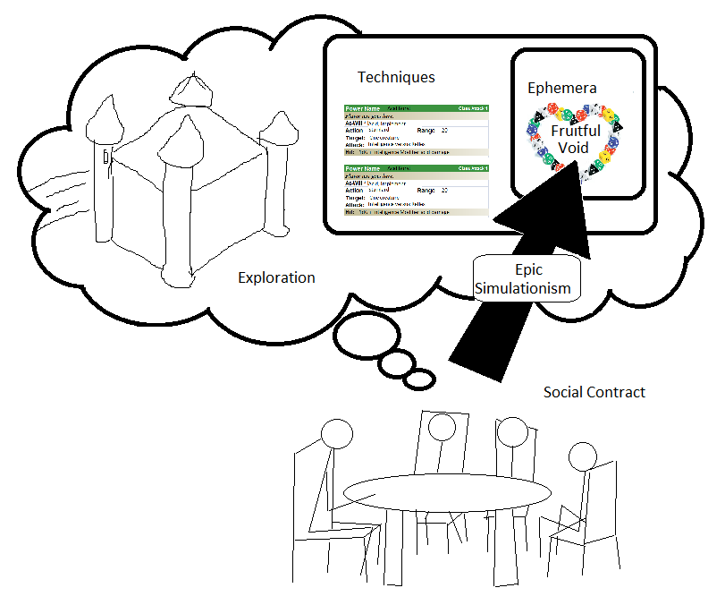

Taking from Lumpley , my first mission as a designer of a new TTRPG is to answer just one solitary question: What's in the void? This void is the game, if the game is well designed. Everything in the game should be in service to the void, and nothing should be included in the game that does not in some way, some how, operate in service to that void. Why is it a "void" and not a "thing" of some sort, like a rule or a score? Because a game designer cannot, can never, dictate how a game will feel. He can create rules, write instructions, maybe write code if it's a virtual game, .. but the concept of "fun" cannot be implemented right there in the rules (at least, not until we find a way to trigger our dopamine systems directly, putting aside the pharmaceutical options). The fun of tennis is not the score. The fun of an arcade game is not the score. The fun is challenging yourself, and challenging the people you're playing with.
I believe I've done enough research to confidently answer the question, though this will turn out to be only part of the answer. So what's in the void for the tabletop hero project? AFFIRMATION OF IDENTITY.
To paraphrase the final argument of Richard Bartle's Virtual Worlds: Why People Play , pleasure is derived from a combination of player development along the stages of learning, e.g. through the Conscious Competence Learning Model , and immersion within and mastery of the virtual world. The player becomes his best self, and proves it by becoming skilled and powerful within the virtual world.
This, however, is not quite enough, as I'm seeking a subtle variation. What I'm seeking is, in fact: AFFIRMATION OF GROUP IDENTITY.
The Hero's Journey, or Monomyth, is a good enough model for a story, either a written book, a movie, a stageplay, or a told tale. There is a single hero progressing through his or her own journey, and the hero comes out of the adventure as a better being. That's all well and good, but when you get four players gathered together at a table together, a single one of them shouldn't be the "hero" by himself.
Quoting Ron Edwards: "As an example, in My Life with Master: Fear, Reason, Love, Weariness, and Self-Loathing are quantified. However, "defiance" and "self-worth" are not. Similarly, although "More than human" and "Less than human" are verbally defined for each character, basic "Human" is not."
If "AFFIRMATION OF GROUP IDENTITY" is the relationship I want to model in
the fruitful void, what scaffolding will lead players to this void, or
encourage them to develop it on their own? This is not such an easily
answered question. However, I can look at the layer below it: the Bartle
Ladder for each player. Every player will go through the same four stages
in their journey:
The nature of the Seeker phase suggests statistics fairly immediately, but I'm more interested in the later phases. If the fruitful void is about the Bartle Ladder, then the Bartle Ladder is about phase 3 especially. How to track players' hill-climbing success? My first thought is that it must be about the "war" bot the "battle", i.e. rewards after every single encounter are counter productive because it encourages players to try and "win" every single one.
Scratch that: a per-battle will work for phase 1 since it will encourage players to learn the system. However it should be in tandem wuth rewards for Opportunists, the other Seekers, so combat victory is not the only way to "win". This kind of reward system should discontinue after phase 1.